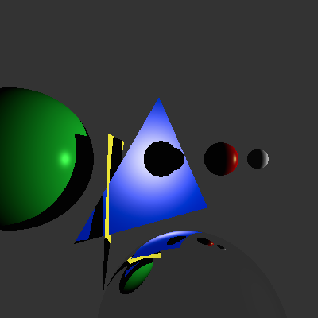

C++ Raytracer
A custom C++ raytracer implementing Phong shading, reflections, and multiple light sources

Project Breakdown
After spending a semester learning about raytracing and the theory behind it in a computer graphics class, I wrote this raytracer as a final project. I started by writing a basic raytracer that implemented Phong shading and supported rendering spheres with one light source, and then expanded it to include reflections, multiple objects and geometry, and multiple light sources. I'm used to rendering images, but I really enjoyed the challenge of writing my own program to render with and learning how to implement the math for it in C++. I love learning about the technicality behind animation!
- Responsible for raytracer implementation and rendering
- Raytracer implemented in C++
- Click HERE to see the code!